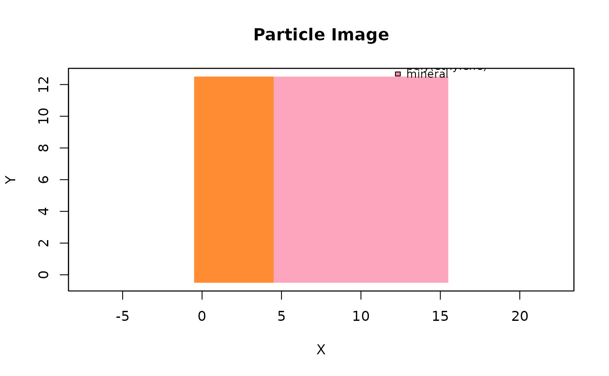

particle_image() plots particle classifications from an OpenSpecy,
Specs, or metadata table. When a visual image is attached with
add_visual_image() or supplied directly, particle coordinates
are transformed onto the image and drawn as a transparent categorical raster.
Usage
particle_image(
x,
material_col = "material_class",
image = NULL,
bottom_left = NULL,
top_right = NULL,
pixel_length = 1,
origin = c(0, 0),
palette = NULL,
alpha = 0.8,
labels = FALSE,
label_col = "feature_id",
main = "Particle Image",
xlab = "X",
ylab = "Y",
legend = FALSE,
pch = 15,
cex = 1,
...
)Arguments
- x
an
OpenSpecyobject,Specsobject, or metadata table.- material_col
column containing material or class labels.
- image
optional image path, array, raster, raw BMP bytes, or image object. If
NULL, an attached visual image is used when available.- bottom_left, top_right
optional map extent in image pixel coordinates.
- pixel_length
map pixel length in plotting units when no image overlay is used.
- origin
numeric length-2 x/y origin offset when no image overlay is used.
- palette
named character vector mapping materials to colors.
- alpha
transparency for particle raster cells.
- labels
logical; draw feature labels when feature IDs are present? The default is
FALSEbecause particle maps quickly become cluttered.- label_col
column used for labels.
- main, xlab, ylab
plot labels.
- legend
logical; draw a base graphics legend?
- pch, cex
retained for compatibility; particle cells are drawn as a raster.
- ...
additional arguments passed to
plot().
Examples
tiny_map <- read_extdata("CA_tiny_map.zip") |> read_any()
tiny_map$metadata$material_class <- ifelse(tiny_map$metadata$x < 5,
"poly(ethylene)", "mineral")
particle_image(tiny_map, legend = TRUE)
